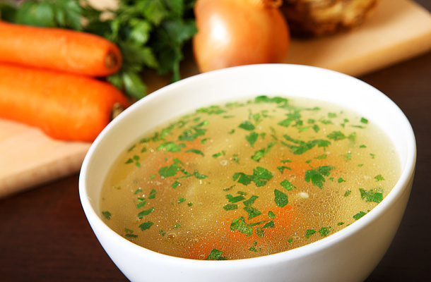

Újházi tyúkleves
Az Újházi-tyúkleves vagy Újházi-tyúkhúsleves Újházi Ede színész találmánya, a magyar konyha egyik ínyencsége és sokak szerint legkedveltebb fogása.
Nagy Endre író szerint a leleményes és lelkes Újházi „nem sajnálta a fáradságot, költséget, elutazott Debrecenbe, hogy saját találmányú levesének anyagát beszerezze.
| Elkészítési idő | Főzés | Összesen |
|---|---|---|
| 25 perc | 80 perc | 105 perc |

Hozzávalók
- 1.5 kg tyúk
- 4 közepes db sárgarépa
- 4 közepes db fehérrépa
- 1 közepes db zeller
- 1 kis db zeller
- 1 közepes db karalábé
- 1 közepes db vöröshagyma
- 2 gerezd fokhagyma
- 100 g kelkáposzta
- 1 db közepes zöldpaprika
- 1 közepes db paradicsom
- bors ízlés szerint
- 2 csipet sáfrányos szeklice
- só ízlés szerint
- 10 dkg csiperkegomba
- 10 dkg fehér spárga
- 10 dkg karfiol
- 20 dkg zöldborsó
- 1 csokor petrezselyem
- 50 g cérnametélt
- 5 l víz
Elkészítés
- A tyúkot megmossuk, és annyi hideg vízzel tesszük fel, amennyi jócskán ellepi, fedő nélkül felforraljuk.
- Közben megtisztítjuk a leveshez való zöldségeket (a zöldségeket nagyobb hasábokra vágjuk).
- A leveszöldségeket hozzáadjuk, és takarék lángon, fedő nélkül addig főzzük, amíg a tyúk puha nem lesz.
- Egy kisebb edénybe tesszük a felszeletelt gombát, spárgát, és a zöldborsóval együtt 1-2 merőkanál húslevet szűrünk rá, és fedő alatt megpároljuk.
- A megfőtt tyúkot kiemeljük a levesből, a nagyobb csontokat és a bőrét eltávolítjuk, forró levest merünk rá, és melegen tartjuk.
- A levesben főtt zöldségeket deszkára emeljük, vékony hasábokra vágjuk, a külön lábasban párolt zöldségekhez adjuk. (A kelkáposztát, hagymát, fokhagymát, paprikát, paradicsomot kidobjuk. A leves tetejéről leszedjük a zsírt.)
- Külön edényben, egy kevés húslevesben kifőzzük a cérnametéltet.
- Egy mély levesestálat forró vízzel kiöblítünk, azaz előmelegítjük, beletesszük a húsdarabokat, a tésztát, a zöldségeket, és rámerjük a forró húslevest. A petrezselymet finomra vágjuk, a leves tetejére hintjük, és azonnal tálaljuk.